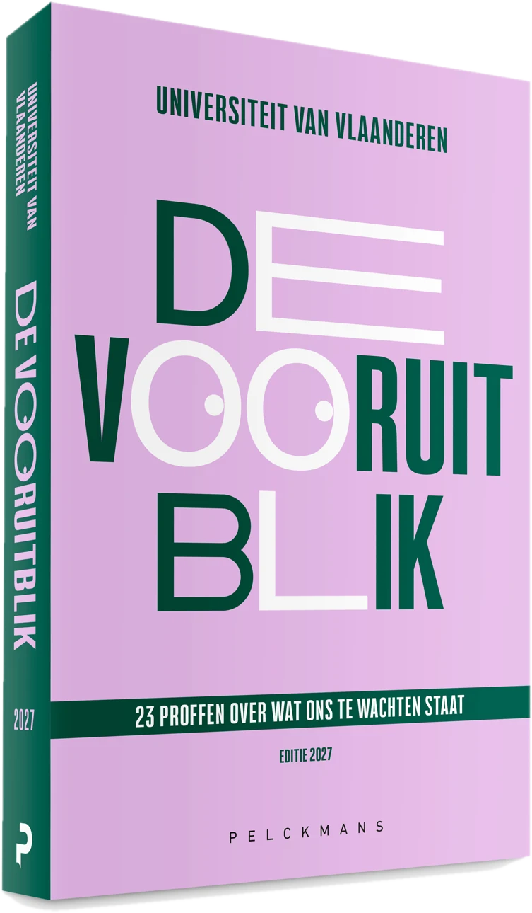

Toolkit voor partners · Editie 2027
De Vooruitblik 2027

Alles om De Vooruitblik te delen.
Portretten, visuals en logo’s voor je eigen communicatie.
Boek, video, radio →Eén vraag per hoofdstuk
De vragen
Klik door naar de professoren.